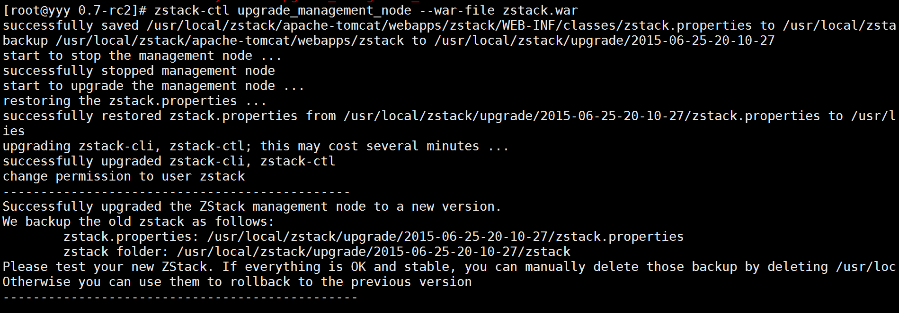
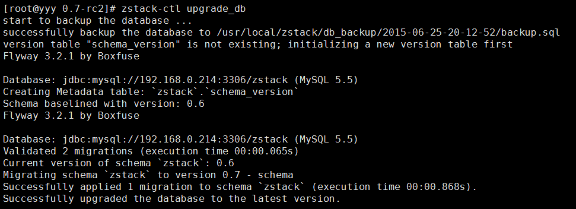
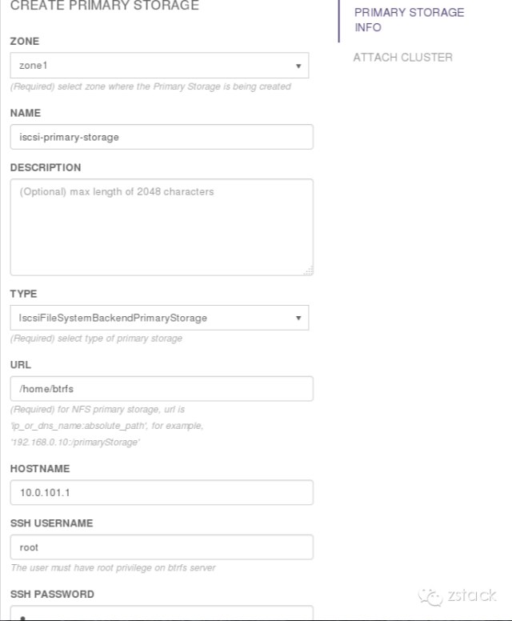
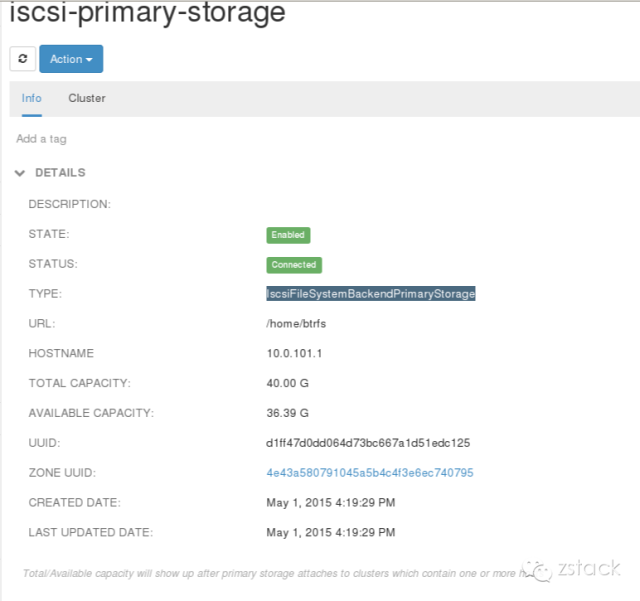

Announcing ZStack v0.7 RC2
Hello everyone, I am Frank Zhang, the architect of ZStack. Today I am happy to announce that ZStack v0.7.0 is in the release cycle. Today we release 0.7.0 RC2 for you test.
Seamless Upgrade
Beginning at 0.7, ZStack supports seamless upgrade from previous versions. You can upgrade your setup with simple commands in a few minutes.
Backup Database
Before performing any upgrade instructions, please backup the current database. This is very IMPORTANT! Though ZStack will automatically backup the current database during upgrade, we strongly recommend you to manually backup the database in case any error happens. You can backup the database following:mysqldump -u root -proot_password --host mysql_ip --port mysql_port zstack > path_to_db_dump.sqlUpgrade by quick script
If you have only one management node, you can upgrade it by ZStack's installation script:
wget --no-check-certificate https://download.zstack.org/releases/0.7/zstack-install-0.7.0-rc2.sh
wget --no-check-certificate https://download.zstack.org/releases/0.7/zstack-all-in-one-0.7.0-rc2.tgz
bash zstack-install-0.7.0-rc2.sh -u -f zstack-all-in-one-0.7.0-rc2.tgz
Be patient for a few minutes, the script will upgrade the database, management node, zstack-cli, zstack-ctl and zstack-dashboard.
Upgrade by zstack-ctl
1. Upgrade the first management node
Perform below instructions on one of your management node:
mkdir -p zstack-0.7-rc2
cd zstack-0.7-rc2
wget --no-check-certificate https://download.zstack.org/releases/0.7/rc2/zstackctl-0.7.tar.gz
/var/lib/zstack/virtualenv/zstackctl/bin/pip install --ignore-installed zstackctl-0.7.tar.gz
wget --no-check-certificate https://download.zstack.org/releases/0.7/rc2/zstack.war
zstack-ctl upgrade_management_node --war-file zstack.war
Once it finishes, the management node, zstack-cli, zstack-ctl are upgraded on the machine. You should see the below picture:

2. Upgrade the database
Make sure you have backup the current database following instructions on the top of this page. Then perform:
zstack-ctl upgrade_db
In a few seconds, you should see the below picture:

zstack-ctl start_node3. Upgrade other management nodes
If you have management nodes running on remote machines, run below commands for each node
zstack-ctl upgrade_management_node --war-file path_to_the_war --host remote_host_ip
4. Upgrade UI
Upgrade your UI on local machine by:
zstack-ctl install_ui
or
zstack-ctl install_ui --host remote_machine_ip
if the UI is installed on a remote machine.
5. Start management nodes
Now all your management nodes have been successfully upgraded to the 0.7 RC2. You can start them by zstack-ctl start_node and
zstack-ctl start_node --remote remote_host_ip
Agents will be automatically upgraded after starting management nodes
You don't need to bother with agent upgrade; they will be upgraded after management nodes reconnect them.Built-in PyPi Index
Many users reported that agents installation sometimes failed because the Python PyPi index was not always available. In 0.7, we pull out all our Python dependencies and build a PyPi index inside the management node. All agents and tools installation will NOT reply on the Python PyPi on the public network anymore. Because of that, the zstack.war gets much bigger(~80M) than before; but we still think it's worthy, because it stable and fast the installation of agents and tools.
New ISCSI Primary Storage Support
The 0.7 version supports ISCSI as primary storage. The default ISCSI server is based on a Linux machine with a BTRFS filesystem. Follow the tutorial to prepare a Linux machine with a BTRFS filesystem, the following instructions assume the BTRFS filesystem is mounted on /home/btrfs
On the UI, go to "Primary Storage" page then click the button "New Primary Storage" to add the ISCSI primary storage:

After adding, double click the primary storage you can see detailed information:

The BTRFS-ISCSI primary storage supports all features you can expect. For the volume snapshot, ZStack leverages the copy-on-write feature of BTRFS; all snapshots are created individually, that is to say, every snapshot stays in a single snapshot tree that has only one snapshot. Compared to the volume snapshot of NFS using KVM's snapshot function, the BTRFS-ISCSI snapshot does not rely on hypervisors. You can achieve the live-snapshot with any version of KVM, which is only available in Ubuntu1404 while using NFS volume snapshot, because the restriction of the libivirt version.
Static IP Support
The 0.7 version allows users to specify static IPs when creating a new VM. The RC2 UI hasn't supported this feature, but you can achieve it using zstack-cli. This feature is implemented based on ZStack's system tag system. You can provide static IPs by system tags in format of:
staticIp::{l3NetworkUuid}::{IP}
For example:
CreateVmInstance name=vm l3NetworkUuids=979520f7953a4c8bb77f90afe3b3d398,825c78d5e5454e17a6357cb618d7d226 defaultL3NetworkUuid=979520f7953a4c8bb77f90afe3b3d398 instanceOfferingUuid=4ec815360b0745b5b34d279405c4fcd7 imageUuid=be97815edffd41b78a5d30cab6e1fc1b systemTags=staticIp::979520f7953a4c8bb77f90afe3b3d398::192.168.0.10,staticIp::825c78d5e5454e17a6357cb618d7d226::10.10.1.10
Update APIs
The 0.7 version adds APIs to update information of every resource. The new APIs are:
APIUpdateVmInstanceMsg
APIUpdateImageMsg
APIUpdateVolumeMsg
APIUpdateInstanceOfferingMsg
APIUpdateDiskOfferingMsg
APIUpdatePrimaryStorageMsg
APIUpdateVolumeSnapshotMsg
APIUpdateBackupStorageMsg
APIUpdateL3NetworkMsg
APIUpdateIpRangeMsg
APIUpdateL2NetworkMsg
APIUpdateClusterMsg
APIUpdateZoneMsg
APIUpdateHostMsg
APIUpdateIscsiFileSystemBackendPrimaryStorageMsg
APIUpdateKVMHostMsg
APIUpdateSftpBackupStorageMsg
APIUpdatePortForwardingRuleMsg
APIUpdateEipMsg
APIUpdateSecurityGroupMsg
APIUpdateVipMsg
All these APIs are very straightforward; you can use zstack-cli and type Tab key to check out their parameters. Detailed
explanation will be given in the user manual once 0.7 GA is released.
Bug Report
If you find any bugs, please open a ticket on GitHub